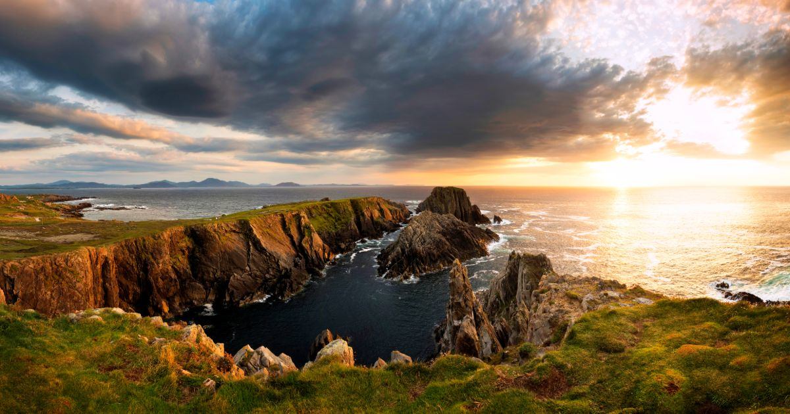
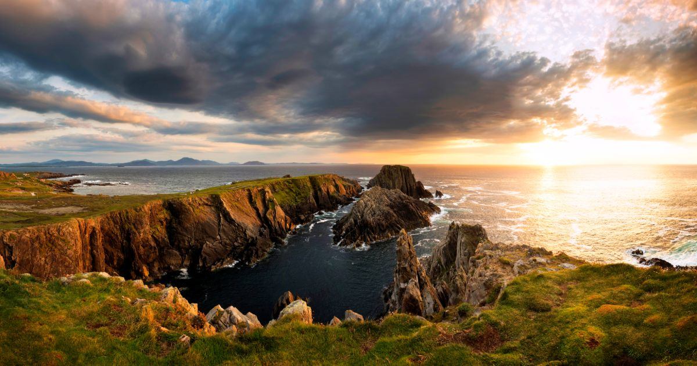

GAA Football

Our GAA team has been successful at times over the years, winning the All-Ireland competiton in both 1992 and 2012.
We continously compete each year with either great or little to no success.
Other Sports
We also have many other sports like hurling, rugby, basketball and many many more.
However none are to the same scale as GAA Football is in Donegal.
If you would like to learn more about sports in Donegal, then click here.